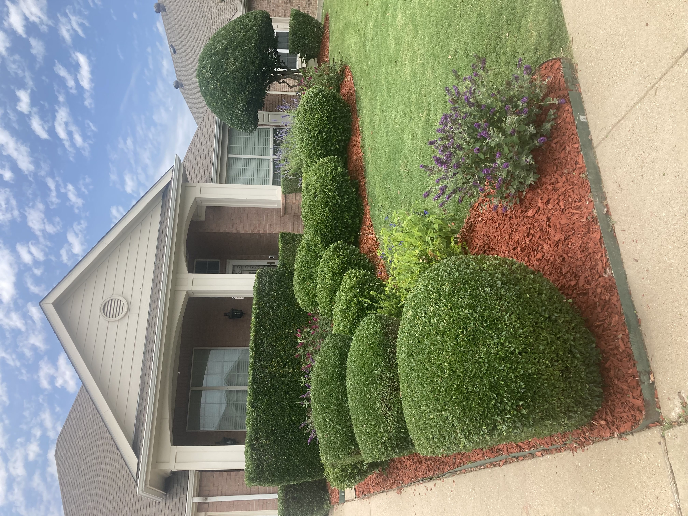
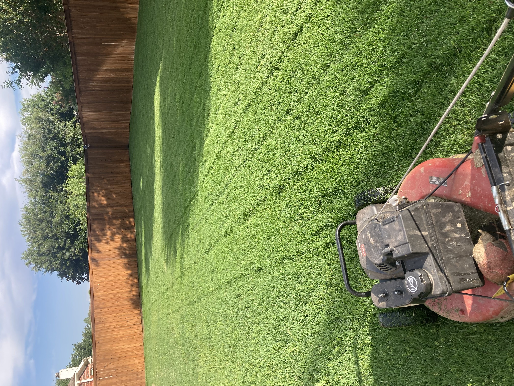
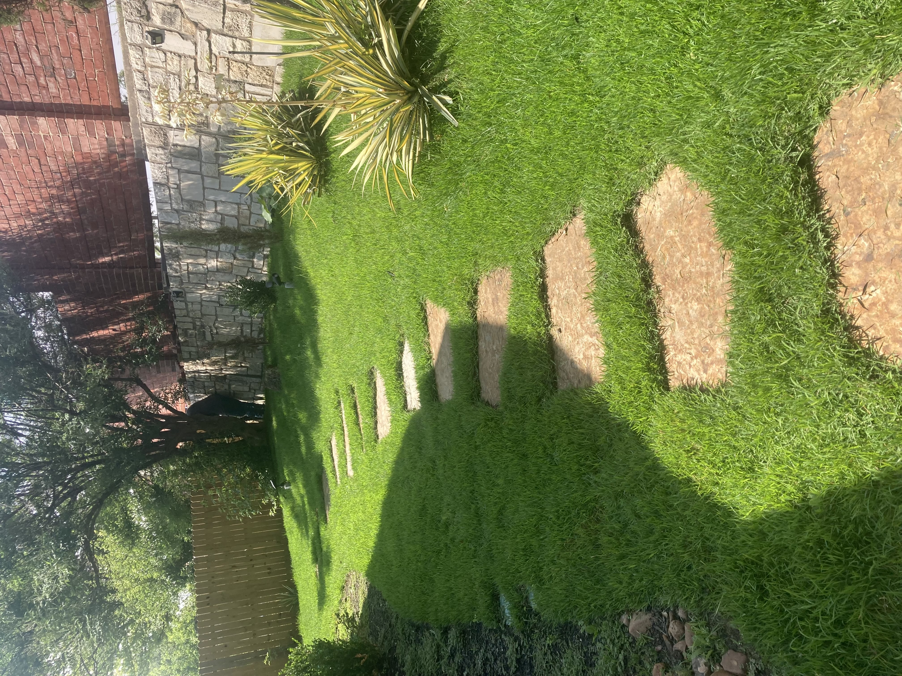
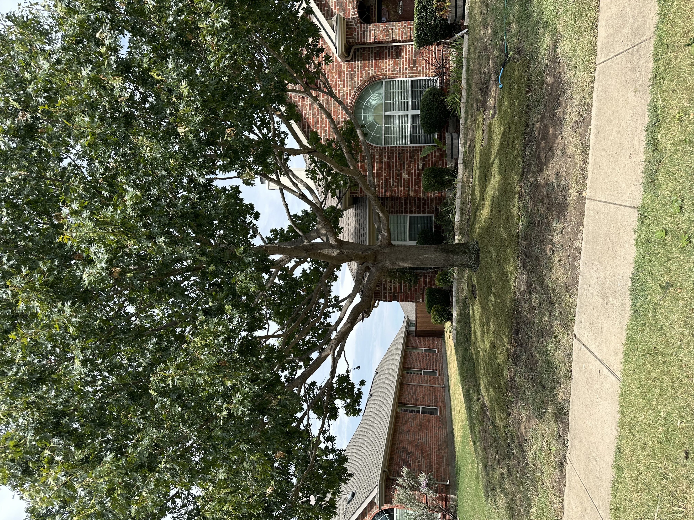
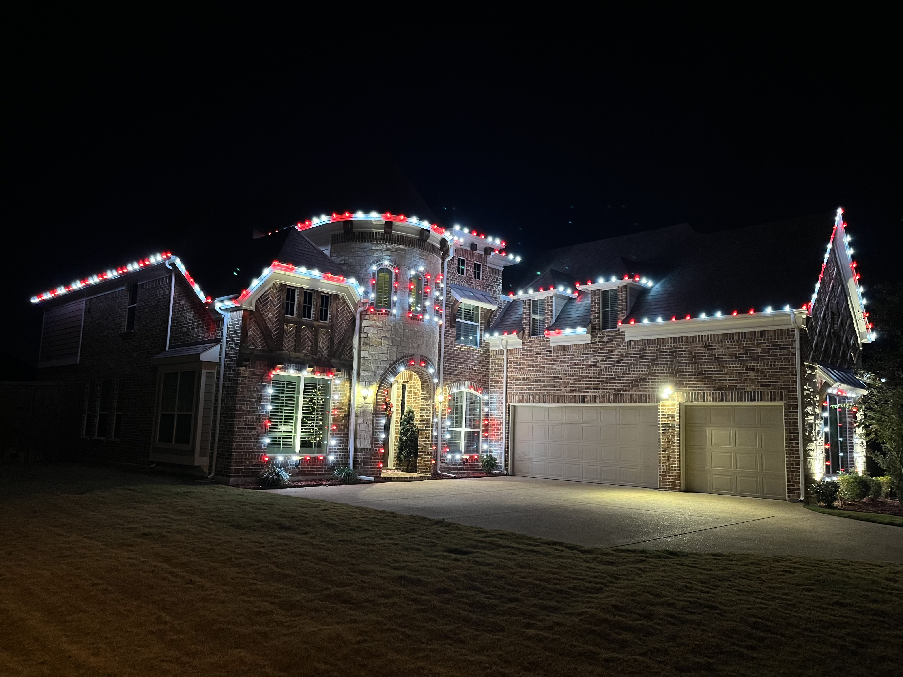

Our Services
Scrub, Groundcover & Flower Beds
- ✅ Cultivate and weed as needed to maintain a well-groomed appearance.
- ✅ Fertilize and apply appropriate chemicals for healthy growth.
- ✅ Trim and prune shrubs and groundcover using proper techniques.
- ✅ Remove suckers from the base of trees and shrubs.

Lawn Care
- ✅ Remove leaves and trash from all landscaped areas.
- ✅ Regularly scheduled lawn mowing to keep grass in check.
- ✅ SOD installation.
- ✅Shaping and cutting back bushes, hedges, and small trees to maintain a neat appearance.

Sprinkler Services
- ✅ Regular monitoring of property by qualified personnel.
- ✅ Repair of sprinkler systems and monitoring water usage.
- ✅ Communications with the owner regarding any problems.

Tree Trimming and removal
- ✅ Clearing branches near power lines or buildings for safety.
- ✅ Seasonal or routine maintenance to prevent damage from storms
- ✅ Safely cutting down dead, diseased, or hazardous trees.
- ✅ Full cleanup and debris removal after the tree is taken down.
- ✅ Removing trees that pose a risk to structures or power lines.

fertilization
- ✅ Application of nutrient-rich fertilizers to promote healthy, green grass.
- ✅ Fertilization to boost the health of young or stressed trees and plants.
- ✅ Organic and environmentally friendly fertilizer options available.
- ✅ Testing soil to determine its pH and nutrient levels before fertilization.
- ✅ Organic and environmentally friendly fertilizer options available.
- ✅ Nitrogen (N)-Benefit: Promotes lush, green growth and improves leaf development.
- ✅ Phosphorus (P)-Benefit: Supports root growth, flower production, and fruit development
- ✅ Potassium (K)-Benefit: Enhances drought resistance, strengthens plants, and improves disease resistance.
Holiday Lighting
- ✅ Tailored lighting plans to match your home's architecture and style..
- ✅ Design consultation to align with customer preferences and budget.
- ✅ Safe removal of all lighting and decorations after the holiday season.
- ✅ Storage services to keep lights safe and tangle-free until next season.
- ✅ Timely setup before the holiday season.
